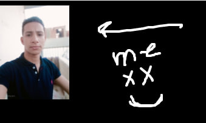

my Resume

=====================================================
Summary:-
aslam alikom ,
this is one of my very first web pages that i have ever created
and it's a actually my first capstone project,
which suposed to be my Resume ,
so yeah that is my Resume enjoy :)
==============================
Education :-
- b2 level at english (could be C1 XD)
- Achieved a high school diploma with a grade percentage of 88% >>> my biggest flex
- oscp
- ejpt
- CCNA
- CEH (this one is cbs)
Work experience :-
"During my childhood days, I held various jobs outside the technology sector.
experiences provided invaluable opportunities for personal growth,
essential life skills and social competence. Some of these jobs included:-
- joiner
- casher
- cypher cafe worker
- kids area worker
- video editor
- content writer
Technical Skills
- Programming Languages: Python, Ruby, C++, Java, JavaScript, SQL
- Networking: TCP/IP, OSI Model, Network Protocols, Network Security
- Operating Systems: Linux, Windows, macOS
- Database Management: SQL, NoSQL
- Web Development: HTML, CSS, JavaScript, PHP, Python
- Cryptography: Encryption, Decryption, Hashing Algorithms
- Reverse Engineering: Malware Analysis, Assembly Language
- Penetration Testing Tools: Metasploit, Nmap, Burp Suite, Kali Linux
Soft Skills
- Problem-Solving: Analytical thinking, critical thinking
- Communication: Clear and concise communication, technical writing
- Teamwork: Collaboration with other team members
- Ethical Hacking Mindset: Adherence to legal and ethical guidelines
- Continuous Learning: Staying updated with the latest threats and technologies
about me
content me